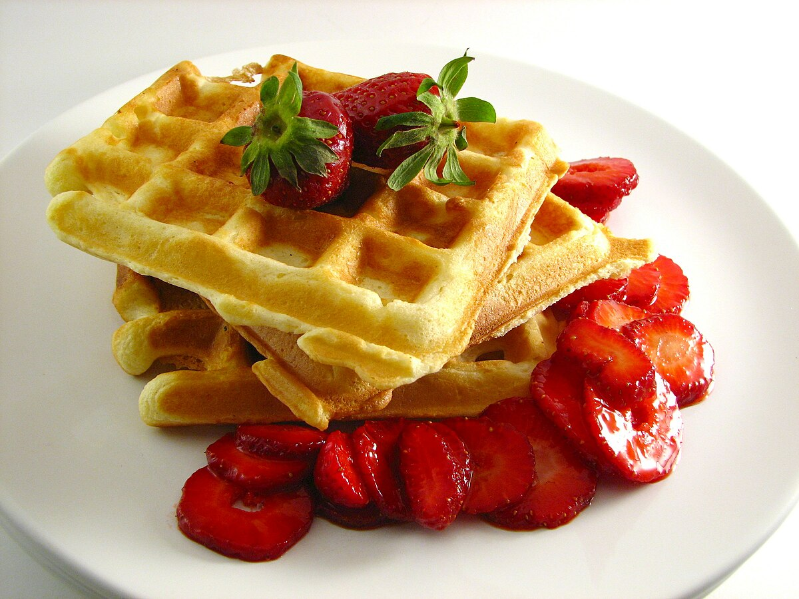

WAFFLE

Description
A waffle is a dish made from leavened batter or dough that is cooked between two plates that are
patterned to give a characteristic size, shape, and surface impression.
There are many variations based on the type of waffle iron and recipe used
Waffles are eaten throughout the world, particularly in Belgium, which has over a dozen regional varieties.
Waffles may be made fresh or simply heated after having been commercially cooked and frozen.
Ingredients
- Eggs
- Self Raising Flour
- Golden Caster Sugar
- Milk
- Butter
- Vanilla Extract
- Maple Syrup
- Sunflower oil
Steps
- Crack the egg (for fluffier waffles,
use only the yolk at this stage) into a large bowl,
then tip in the flour and a generous pinch of salt.
- Add the sugar, if using,
then gradually whisk in the milk followed by the melted butter until smooth.
Whisk in the vanilla, if using.
- If you've chosen to make fluffier waffles, whisk the egg white to soft peaks,
then gently fold this into the batter If
you've chosen to make fluffier waffles, whisk the egg white to soft peaks,
then gently fold this into the batter.
- Heat a waffle maker following the manufacturer's instructions,
brush with a little of the oil, then ladle in enough
batter to just cover the surface. Cook following
the manufacturer's instructions (usually 5-6 mins) until the waffles are golden brown and crisp.
- Serve immediately or keep warm in a low oven while you make the rest.
Drizzle with maple syrup or sprinkle with icing sugar, if you like.